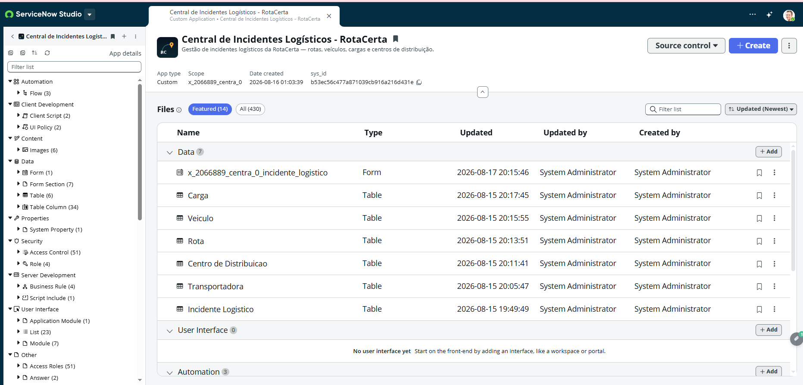
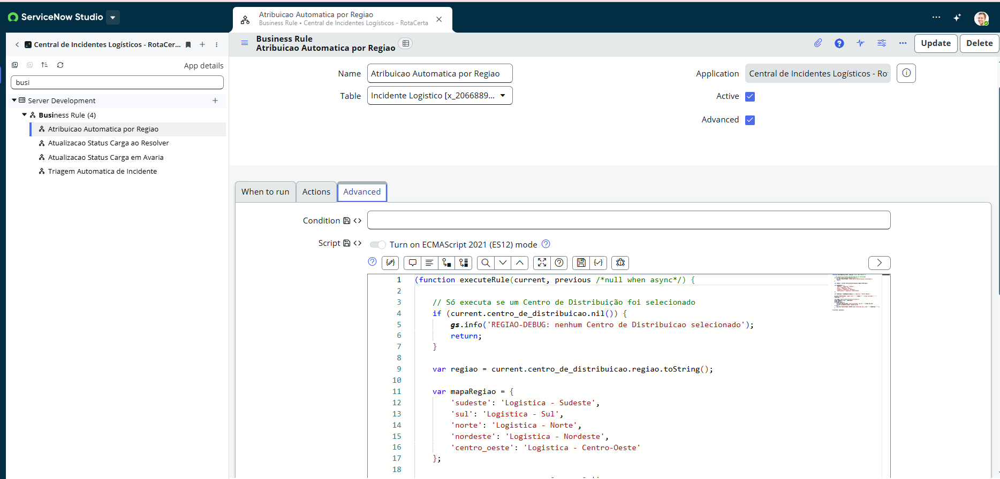
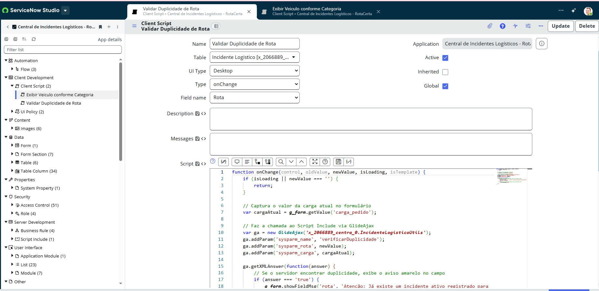
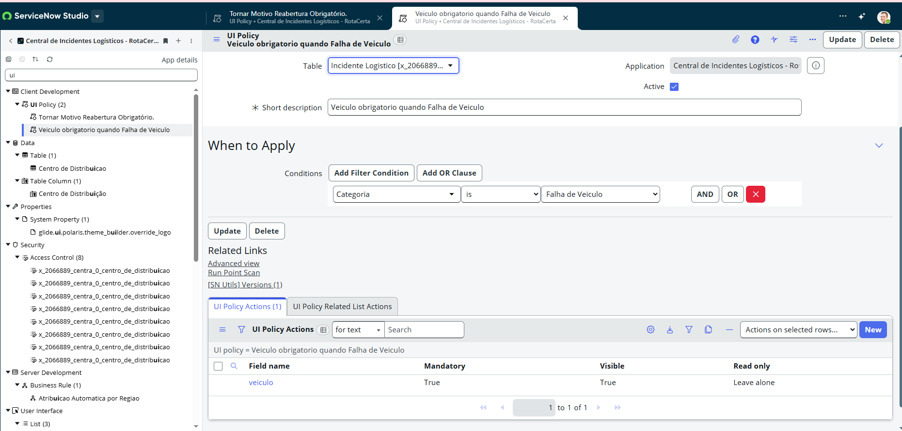
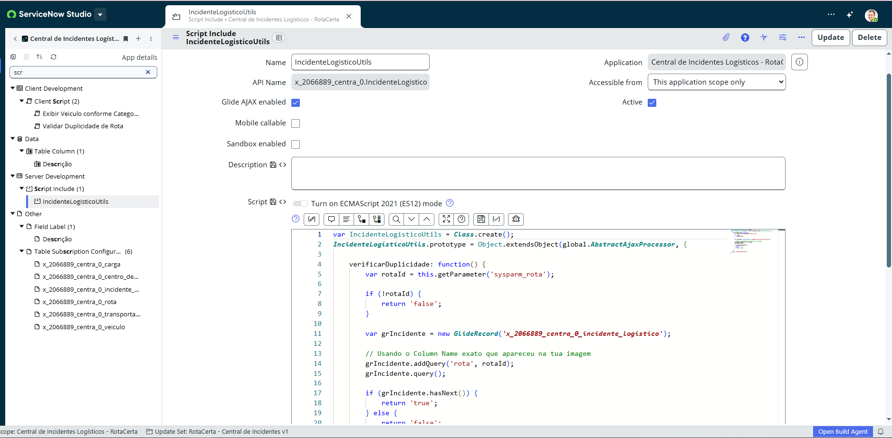
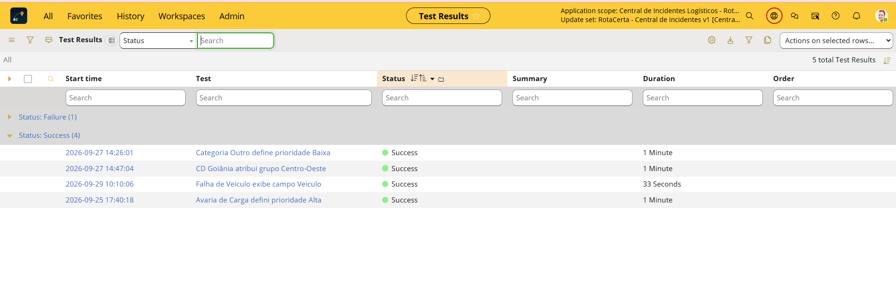
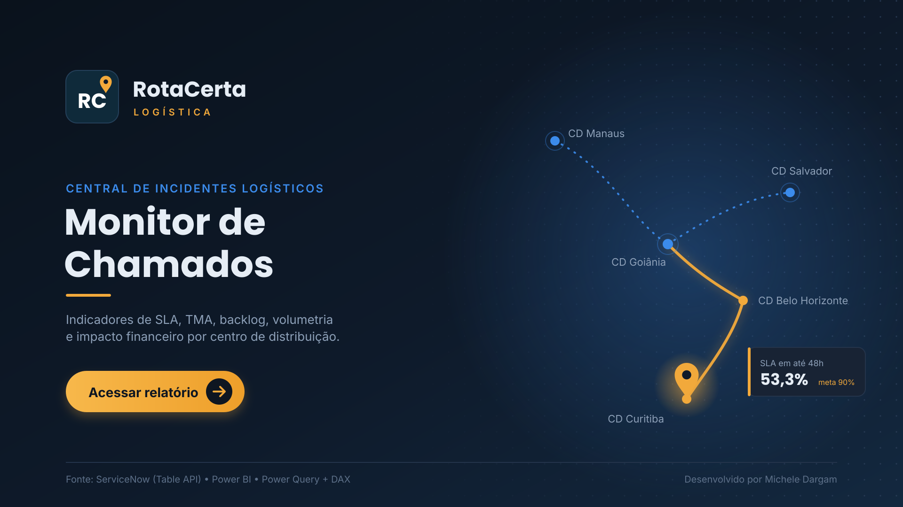

desenvolvimento & customização
Plataforma
JavaScript, HTML, CSS e Angular aplicados a Business Rules, Client Scripts e Service Portal.
disponível para novas oportunidades
Construo aplicações no ecossistema ServiceNow do modelo de dados à automação: regras de negócio, testes e dashboards que resolvem problemas reais de operação.
// projetos
Cada projeto é um registro. Clique para abrir.
// case · PRJ0001
Aplicação ServiceNow em escopo próprio para gestão de incidentes em operações logísticas.
Projeto criado como peça de portfólio técnico, com o objetivo de cobrir na prática os requisitos mais comuns de uma vaga júnior de Desenvolvedora ServiceNow.
Construir do zero uma aplicação de gestão de incidentes logísticos, capaz de registrar ocorrências, atribuir automaticamente o time responsável por região e dar visibilidade do impacto operacional em um dashboard.
A aplicação centraliza o registro de incidentes logísticos, direciona automaticamente cada ocorrência para o time certo por região e dá visibilidade em tempo real da operação, reduzindo a dependência de triagem manual.
// experimente
Escolha o centro de distribuição e a categoria. As regras de atribuição e priorização rodam como no app.
// aguardando envio do formulário…
// automated test framework
Os testes que validam as regras do app. Rode a suíte.
// evidências
Prints reais do desenvolvimento. Clique para ampliar.






// case · PRJ0002
Monitor de Chamados Logísticos: os chamados do app RotaCerta saem do ServiceNow pela Table API (REST) e viram indicadores de operação no Power BI.
Consumir a tabela customizada Incidente Logístico por API e transformar os chamados em indicadores de SLA, TMA, backlog, volumetria e reabertura, os mesmos acompanhados por times de operação e BI.

// arquitetura
Passe o mouse em cada etapa.
// experimente · o problema real
Toda chamada voltava 401, mesmo com senha certa. A causa era a Basic Auth Restriction, ativa por padrão em instâncias novas (release Australia). Marque as correções e envie a requisição.
https://<instancia>.service-now.com/api/now/table/x_2066889_centra_0_incidente_logisticosysparm_display_value=truesysparm_exclude_reference_link=truesysparm_fields=number,categoria,centro_de_distribuicao,state,…sysparm_limit=1000
// dashboard
Os números do relatório, recriados aqui. Passe o mouse nos gráficos.
chamados abertos · pico em agosto
meta de 90%
em aberto x encerrados
o gargalo está na triagem
peso de cada problema
alerta acima de 40 h
valores aproximados
// medidas DAX
// troubleshooting
Causa: Basic Auth Restriction + "Password needs reset" marcado.
Solução: role snc_basic_auth_api_access e desmarcar o reset. Credencial validada com curl antes de voltar ao Power BI.
Causa: a tabela estende Task, não Incident.
Solução: closed_at como fim do atendimento (TMA) e o campo customizado motivo_reabertura como indicador de reabertura.
Causa: nenhuma SLA Definition configurada na PDI, então usar o campo daria 100%, um número irreal.
Solução: SLA calculado pelo tempo de resolução (≤ 48 h). Em produção, o ideal é a tabela task_sla.
Causa: campo moeda retornado como string.
Solução: remover o "$" no Power Query e converter com localidade Inglês (EUA); sem isso o ponto seria lido como separador de milhar.
Causa: conector Web / Página da Web interpreta a resposta como HTML.
Solução: conector API Web ou Json.Document(Web.Contents()) numa consulta em branco.
Causa: método "Retrieve a record" (um registro) selecionado.
Solução: usar "Retrieve records from a table (GET)".
“O gráfico de status mostrou que o gargalo está na triagem. Para TME e abandono, mapeei os dados necessários: o TME depende do início real do atendimento (work_start), e o abandono viria da URA, integrada como uma nova tabela fato.”
// sobre
Graduada em Banco de Dados (Estácio), com foco no ecossistema ServiceNow, unindo modelagem de dados, arquitetura de tabelas e automação de processos ao desenvolvimento na plataforma.
desenvolvimento & customização
JavaScript, HTML, CSS e Angular aplicados a Business Rules, Client Scripts e Service Portal.
dados & integrações
Modelagem SQL, conceitos de ETL e automação de fluxos com n8n e Docker, incluindo um pipeline fiscal autônomo com auditoria e validações de conformidade.
metodologias & governança
Organização de fluxos de trabalho e squads com Scrum e Kanban, com foco em entregas eficientes.
Busco oportunidades como Administradora ServiceNow, Analista ServiceNow ou Desenvolvedora Trainee/Júnior, aplicando visão analítica de dados e habilidades técnicas para otimizar processos e criar soluções na plataforma.